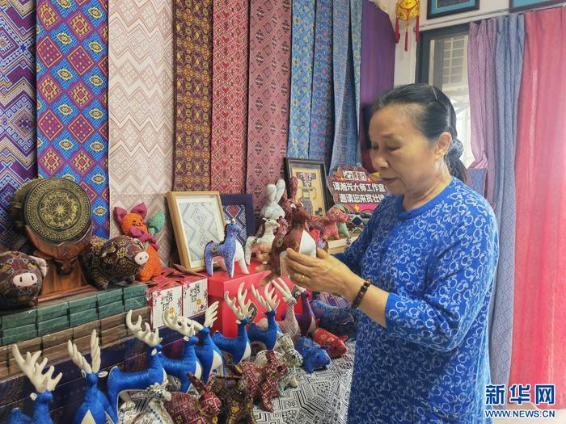
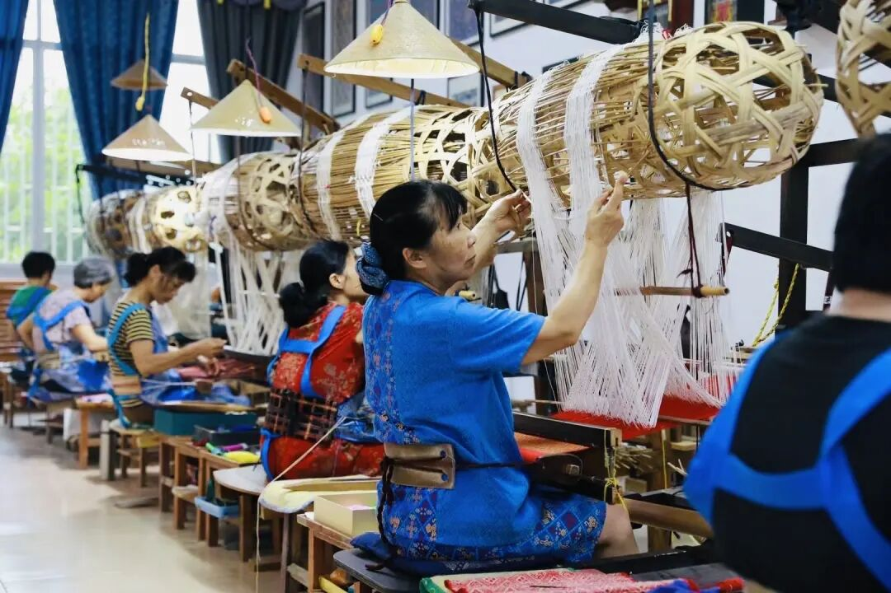
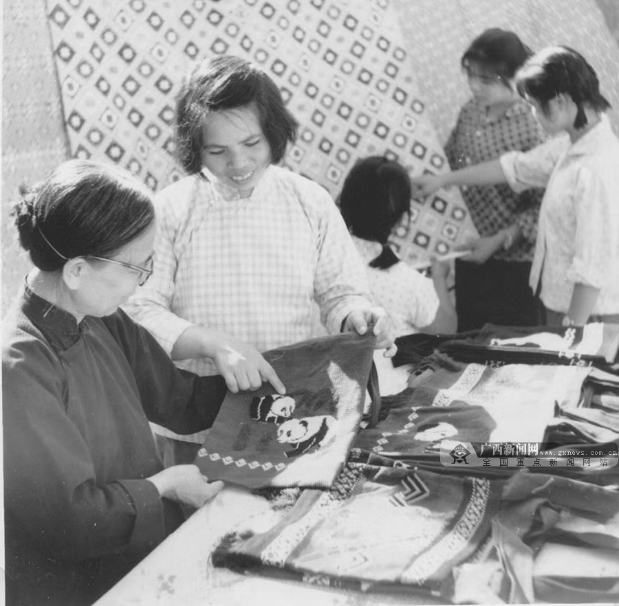
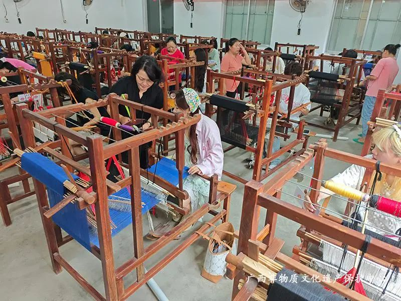
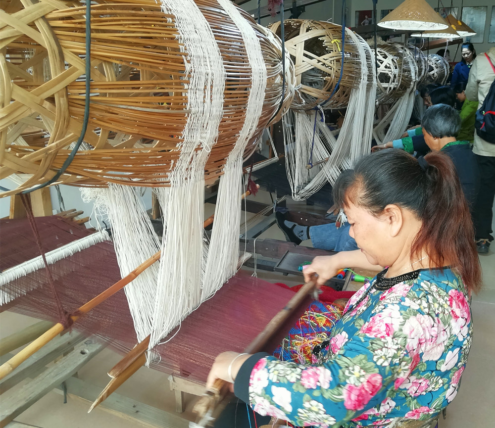
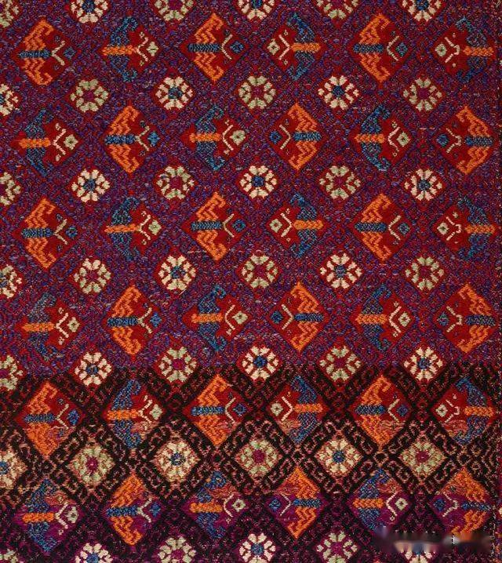
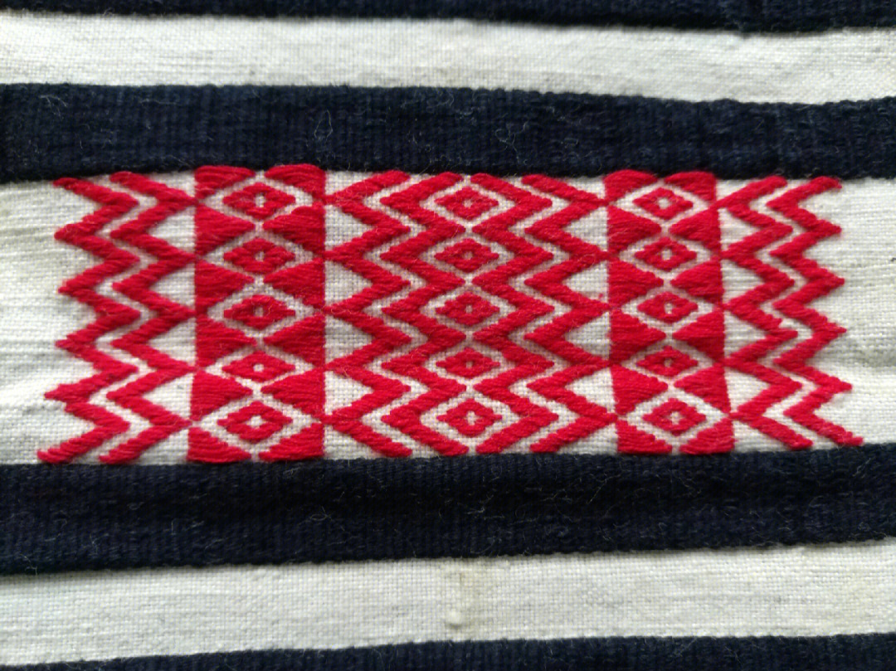
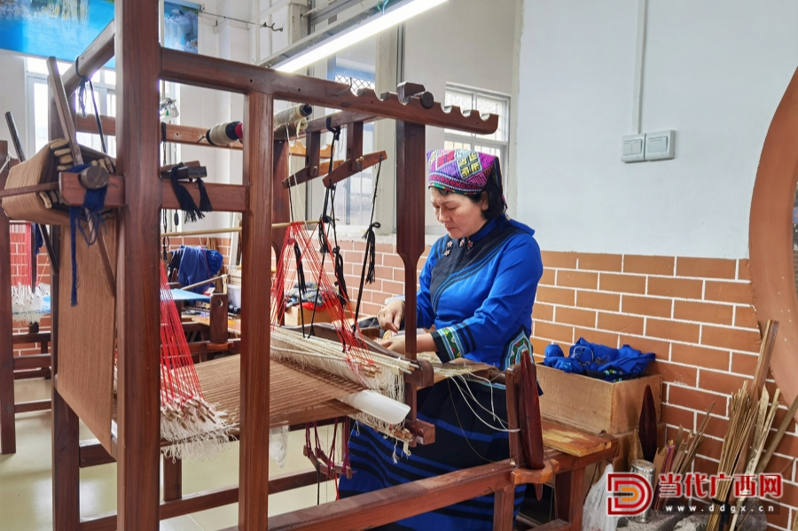
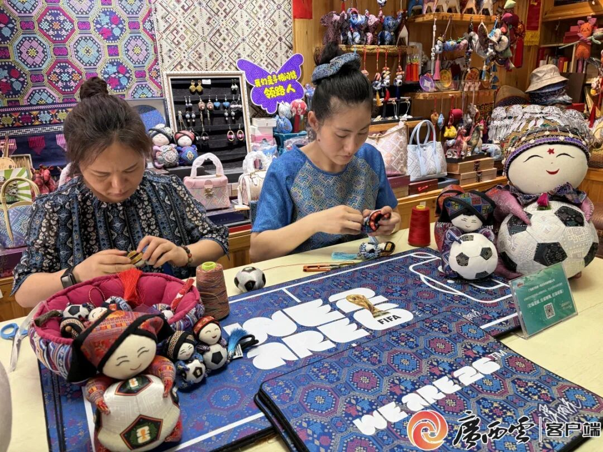

中国工艺美术大师 · 中国织锦工艺大师
谭湘光
1970 年，16 岁的她拜邻居梁树英为师，此后五十余年只和壮锦打交道。曾任宾阳县民族织锦厂厂长，2002 年创办湘光织锦坊。
她做了两件“离经叛道”的事：把门幅从三十厘米做到三米以上，把日产量从十厘米做到二十米；把壮锦的浓烈配色改成莫兰迪色系，让布料变薄变软。她的原话是“使用就是最好的传承”。

一门千年手艺，在机器、市场与赛场之间，被重新织了三遍。
它没有死，但它正在变成另一个东西。
壮族织锦技艺在 2006 年进入第一批国家级非物质文化遗产名录时，壮锦已经死过一次：上世纪八九十年代，机器织的床单和被面把它赶出了婚嫁的箱底，织娘转行，织机进了仓库。
第二次生死发生在最近十年。它被重新“发明”成围巾、包袋、玩偶、鼠标垫和足球，日产量从十厘米跳到二十米，纹样被印上世界杯的授权商品。2026 年 6 月，谭湘光团队的壮锦文创拿到美加墨世界杯大中华区官方授权，媒体称之为“破圈出海”。
这当然是好事。但一门手艺被救活，和被理解，不是同一件事。这个专题只想做一件事：把壮锦拆开——拆到经纬、拆到花笼、拆到每一个纹样的来处——再合起来看，它在 2026 年究竟变成了什么。
口径说明：工序数取龙州金龙一带的说法；靖西壮锦厂的口径为八道主要工序。产量、门幅数据来自新华社、人民网及广西壮族自治区人民政府相关报道，详见「资料」页。
栏目一 · 溯源
壮锦不是从某一天开始的。它是一条被反复接续的线：汉代有织锦的实物，宋代有“锦”的形制，明清进了贡单和嫁妆，二十世纪进了工厂，二十一世纪进了名录。每一段都不是自然延续，而是有人把它接上去的。
《后汉书·南蛮传》记岭南先民“织绩木皮，染以草实，好五色衣服”。1970 年代，广西贵县（今贵港）罗泊湾汉墓七号残葬坑出土数块桔红色回纹锦残片，证实汉代广西已有织锦。需要说清楚：这是织锦技艺的远源，与今天意义上的壮锦并非同一种织物。
来源：靖西县文化馆史料辑录；《后汉书·南蛮传》南宋周去非《岭外代答》写邕州左右江一带的织品，“白质方纹，广幅大缕，似中都之纹罗，而佳丽厚重，诚南方之上服也”。学界一般认为，真正意义上的壮锦在这一时期形成——注意“方纹”二字，菱形骨架从这时起就是它的语法。
来源：《岭外代答》；广西壮族自治区人民政府非遗专题页明万历年间，壮锦远逾千里入朝，织有龙、凤纹样者被列为贡品，达官显贵“莫不争购之”。纹样由此第一次被分出等级：龙凤属于谁，几何属于谁。
来源：广西壮族自治区人民政府《壮族织锦技艺》清乾隆《归顺直隶州志》（今靖西）记：“嫁奁，土锦被面决不可少，以本分从能故也，土锦以柳丝绒为主，配成五色，厚重而耐久。”壮锦在这个阶段不是展品，是生活必需品——这是它最健康的状态。
来源：《归顺直隶州志》；靖西县文化馆史料辑录1956 年，靖西组织成立绣织社；1960 年改称壮锦厂，专门从事壮锦生产与技工培训。手艺第一次被装进“单位”里，师傅变成了职工，产量变成了指标。
来源：广西日报《靖西壮锦厂点燃非遗文化的千年之光》，2023-08靖西壮锦厂最兴盛时工人八十余人，产品在市场上很受欢迎。随后机器织造的纺织品涌入，背带、被面、床单这些壮锦的老用途一个个失效。厂里织娘转行，坚守者的年龄越来越大。
来源：广西壮族自治区人民政府《文化中国行·我们的非遗》，2024-09“壮族织锦技艺”经国务院批准列入第一批国家级非物质文化遗产名录。同年，靖西市壮锦厂成为第一批国家级非遗生产性保护示范基地。保护开始了，但保护的对象是“技艺”，不是“用途”。
来源：中国政府网第一批国家级非遗名录；人民网，2022-06龙州金龙壮族织锦技艺列入自治区级非遗名录。它提示了一件事：壮锦从来不是单点，靖西、宾阳、忻城、龙州各有一套手法与配色，学界称之为“南北两派”。
来源：广西壮族自治区人民政府《广西烟火｜经纬交织铺壮锦》，2025-122024 年 10 月，壮锦国家标准获批发布，2025 年 5 月 1 日正式实施。一门手艺拥有国标，意味着它开始被当成“产品”来度量：门幅、色差、强力、缩水率。
来源：来宾市人民政府《忻城壮锦》，2026-10谭湘光团队设计的“壮球孃孃”挂件、壮锦足球、壮锦球服获得 2026 美加墨世界杯大中华区官方授权并发布，以蟒龙纹为核心纹样。72 岁的她说：“这一天我等了 55 年。”
来源：人民网《行进中国丨千年壮锦“踢”向世界》，2026-06-09邕州左右江峒蛮，有织白𫄨，白质方纹，广幅大缕，似中都之纹罗，而佳丽厚重，诚南方之上服也。
——南宋 · 周去非《岭外代答》。这段不足四十字的记载，是壮锦第一次被文字确证：白色的底，方形的纹，幅面宽、线缕粗，比中原的罗更厚重。
引自《岭外代答》，转引自靖西县文化馆史料辑录两张照片 · 六十年


照片来源：靖西壮锦厂展厅旧照（广西新闻网刊布）；织锦车间照片见「资料」页图片来源。
栏目二 · 织造
一匹壮锦不是“织”出来的，是“算”出来的。备料与上机决定它能不能织，提花决定它好不好看，成锦只是最后那口气。各地说法不一：龙州金龙一带数出十五道，靖西壮锦厂归纳为八道主要工序——但无论如何拆，中间那道“挑花结本”都绕不过去。
工序口径：广西壮族自治区人民政府《广西烟火｜经纬交织铺壮锦》（2025-12）、广西日报（2024-09）。浆线用米汤或粉浆浸润，是为了提高耐磨与抗拉；染线传统用植物与矿物染料，见本页「纹样」栏配色表。
竹笼机 · 一台竹编的“计算机”
壮锦织机与其他名锦最大的不同，是机上那只巨大的竹编圆笼。织娘先按设计把花纹挑出来，用一条条编花竹和大综线编排在花笼上；织造时按顺序一条条转移编花竹，通过纵线牵引，花纹才在锦面上一行行浮现。程序先于织物存在——这是理解壮锦的关键。
编花笼全凭口诀与空间想象，“一丝乱，全局紊，半点马虎不得”。上百根竹条排满，一个完整的花本才算成型。合起来看，这就是一套需要大脑实时运算的提花程序：织娘在挑起经线的同时，把自己变成了存储器。
也正因为如此，壮锦的难度不在“手快”，而在“记准”。一个花本编错一根竹条，整匹布的纹样就会错位——而错位在一米之外是看不出来的，要等到整匹落布才发现。所谓“寸锦寸金”，金不在材料，在这份不能返工的注意力。
引文与工序描述来源：广西壮族自治区人民政府《广西烟火｜经纬交织铺壮锦》，2025-12-15。

一个字的差别
经线自始至终不断、不换色；纬线则随纹样换梭，换一次色就剪断一次。“断”的是纬线，不是耐心。色块的边界就是断纬的位置，所以壮锦的图案边界清晰、正反分明——这是它看起来“像织出来的画”的原因。
经纬各守一色，织出的是单色或素雅纹样。快，适合做边饰与日常用布。熟练织娘织一条这样的围巾，十余日仍不足一米。
纬线随纹易色，一纹一断。熟手织简单纹样一日最多三十厘米，遇上繁复图式，终日劳作或仅得十厘米——彩色壮锦的核心技法。
对比图为按两种织法逻辑重绘的示意图，用于说明色彩组织的差别，非实物扫描。数据来源：广西壮族自治区人民政府，2025-12。
尺幅的解放
传统壮锦宽幅只有三十厘米左右，长期伏在织机前的手工艺人容易患腰椎病，窄幅也限制了产品类型——做得了背带和被面，做不了衣服和包。谭湘光的做法很直接：改织机。宽幅先扩到四十五厘米，再扩到三米以上；同时引入机械织造，把日产量从十厘米提到二十米。
门幅，只能做背带、被面、头巾
门幅，可裁衣、可做包、可做整幅装饰画
复杂纹样下的单日产量
单日产量，约合手工的两百倍
需要分清的是：机械能复制“图案”，复制不了“挑花结本”这一层心智劳动；机织与手织在浮长线、厚度、手感上也不是同一种产品。产量提升解决的是“活下去”，不是“织得更好”——这个区别，是理解后面所有争议的前提。
数据来源：新华网（2024-06）、人民网（2026-06）、南宁市人民政府（2026-06）。不同报道对初始门幅的表述有 30 厘米、45 厘米、60 厘米等差异，本页取 30 厘米口径并注明，详见「资料」页存疑清单。
栏目三 · 纹样
壮锦的纹样看起来繁密，其实极有纪律：几乎一切都长在菱形骨架上，用直角与 45° 斜线说话，因为织机只会走这两种方向。限制生出了风格——曲线在这里没有位置，水波只能做成阶梯，凤的翅膀只能折成直角。点击左侧任一骨架，看它的来历与织法。
几何纹 · 骨架
六个骨架为按传统结构重绘的示意图（逐格对应经线与纬线的交织关系），用于说明骨架逻辑，不代表任何一件具体藏品。真实纹样的线密度远高于此。
纹样谱系 · 动植物
几何纹是骨架，动植物纹是血肉。壮锦的第二种构图式样就是“几何为底、上饰动植物”，形成有浮雕感的复合图形。这些活物都不是写生，而是被几何化、图案化之后才允许上机。
民间有“十件壮锦九件凤，活似凤从锦中出”之说。凤在壮族心里是吉祥、美好、幸福的象征，造型与鸡纹相近而更夸张，翅膀与尾羽一律折成直角与阶梯。
青蛙是壮族的祥瑞灵物。红水河流域至今流行春节期间祭蛙的“蚂拐节”，祈风调雨顺、五谷丰登、人丁兴旺。织蛙纹，是把一场仪式压缩进一个方格。
龙的造型有团龙、双龙戏珠、对龙、盘龙等多种。2026 年世界杯授权产品即以蟒龙纹为核心纹样——最传统的权力符号，被用在了最现代的赛事商品上。
“蝶”与“耋”同音，寓长寿；“凤穿牡丹”寓富贵。这类复合图案通常在几何底纹上再加一层，考的是花本编排的层级能力。

纹样释义来源：抖音百科「壮锦」词条、来宾市人民政府《忻城壮锦》、广西社会主义学院相关论文；照片见「资料」页。
构图 · 配色
壮锦的图案构成大致三种：一是平纹上织二方连续与四方连续的几何纹，连绵而朴素；二是几何为底、上饰动植物，形成多层次复合图形；三是多种几何纹大小结合、方圆穿插，编成繁密而有韵律的复合图案。颜色则讲究“以少见多”——纯朴中见丰富，素雅中见多彩。
染料来源：南方周末《九百织娘一织郎》（2024）、广西文化和旅游厅相关图文。各地配方不同，忻城、靖西、宾阳、龙州各有偏色，此处只列常见者，不作配方依据。
壮锦的配色逻辑不是“和谐”，是“对比”：以黑或白为地，红、黄、蓝、绿直接撞上去，靠面积与位置调和。今天的设计师把它换成莫兰迪色系，视觉上更“高级”，但也抽掉了一层东西——那种在田间、在节庆里被看得见的响亮。

栏目四 · 新生
壮锦的“复活”不是抽象的。它由具体的人一寸一寸推进：一个把织机撑开到三米，一个把厂子从倒闭边缘拉回来，一个在边境村屯把口诀教给下一代。三个人分处宾阳、靖西、龙州，做的其实是同一件事——把手艺重新接回生活。

中国工艺美术大师 · 中国织锦工艺大师
1970 年，16 岁的她拜邻居梁树英为师，此后五十余年只和壮锦打交道。曾任宾阳县民族织锦厂厂长，2002 年创办湘光织锦坊。
她做了两件“离经叛道”的事：把门幅从三十厘米做到三米以上，把日产量从十厘米做到二十米；把壮锦的浓烈配色改成莫兰迪色系，让布料变薄变软。她的原话是“使用就是最好的传承”。

国家级传承人 · 靖西市壮锦厂厂长
1987 年进厂，从普通织女做到第四任厂长，见证了厂子八十多人的鼎盛，也见过织娘一个个转行。
她把厂子做成“企业＋农户”：农闲时妇女在家织，厂里统一收。壮锦厂、壮族博物馆这些基地每年接待游客一百万人次以上，壮锦绣球、龙宝布偶、包包是最好卖的三样。
织锦工坊负责人 · 自治区级非遗项目点
在壮锦的重要发源地之一板池屯，她守着一间工坊，边织边教。“五上二下、三上四下”，口诀声落，挑花尺在经纬间起落；竹笼上排满百根竹条，一个完整的花本才算成型。
她那条用通经通纬织法的围巾，织了十余日仍不足一米——这是这门手艺今天最诚实的速度。
人物信息与引文来源：新华网（2024-06）、人民网（2022-06 / 2026-06）、广西壮族自治区人民政府（2024-09 / 2025-12）、广西日报（2023-08）。各人年龄、职务随时间变动，本页取 2026 年公开报道口径。
产业的一侧
来源：人民网（2026-06）、广西日报（2023-08）。“辐射带动”含培训、订单外包与居家代工等不同形式，不等于稳定就业，阅读时需注意口径。
案例 · 2026 年 6 月

6 月 8 日，中国工艺美术大师谭湘光团队正式发布获得 2026 美加墨世界杯大中华区官方授权的系列产品：“壮球孃孃”挂件、壮锦足球、壮锦球服。核心纹样选的是壮锦最具代表性的蟒龙纹，配色则换成了更贴合当下审美的柔和色系。
原创 IP“壮球孃孃”以壮族吉祥饰物麽乜为原型，把“壮族妈妈”怀里的太阳换成了一颗足球，寓意有“球”必“赢”。授权审核从创意构思、试样打版、资质核验一路卡到面料配色与成品包装，每一处都要对标国际足联的要求。
更关键的一句话藏在报道里：订单被交回乡村织娘手中，项目依托世界杯订单启动千名村民帮扶计划，被称为“非遗＋体育 IP＋乡村就业”的新路径。也就是说，这场“破圈”落到生产端，是一次把手织产能重新接进全球供应链的实验。
来源：人民网《行进中国丨千年壮锦“踢”向世界》（2026-06-09）、南宁市人民政府《一梭经纬织古韵 千年壮锦耀世界》（2026-06-17）。
栏目五 · 观察
以下每一行都分成两半：左边是查得到出处的事实，右边是本站的判断。事实可以核对，判断可以被反驳——这正是一个专题该给出的东西。
机械织造把日产量从十厘米提到二十米，门幅从三十厘米扩到三米以上；同时，挑花结本仍只能由人完成，一个花本要排满上百根竹条。
机械化救活的是“布”，不是“技”。产量与门幅解决的是能不能接单，而手艺的核心——那套把图案编成程序的脑力劳动——并没有被机器保存，它被集中到了少数传承人和设计部门手里。壮锦的“非遗价值”因此正在从“织造技艺”向“纹样 IP”迁移，这是最值得警惕的一次重心转移。
2026 年世界杯授权产品“摒弃传统浓烈配色，改用柔和雅致的莫兰迪色系”，并“将厚重布料改良得轻薄舒适”。
配色可以被市场重新校准，这不算错——但要守住底线：菱形骨架、阶梯折线、断纬形成的硬边界，这三样是壮锦的身份证。如果连它们也被抹平，剩下的只是“民族风”三个字，任何一个设计师都可以贴上。判断一门非遗是否还在，不看它卖了多少，看它有没有不能被替换的语法。
蛙纹关联着红水河流域的蚂拐节与稻作祈雨；太阳纹源自稻作民族的太阳崇拜；麽乜是护佑孩童的吉祥饰物。
符号要活下去，先要被使用，再被重新解释——这是所有活态非遗的必经之路，不必哀悼。真正的风险不在“变浅”，在解释权交给了算法与爆款：当蛙纹被当成“可爱的小图形”批量印在鼠标垫上，没有人再知道它曾经是一场求雨的仪式，它就真的死了，只是尸体很好看。
“八桂巧娘”已建成 25 个非遗传承工作坊，辐射带动超 10 万名妇女；受访织娘称月收入可达四五千元；订单主要来自赛事授权、展会与旅游渠道。
非遗的就业红利，落点在最柔软的一环：居家、计件、按单结算。如果没有稳定订单与技能溢价，这种“指尖经济”会退化成低薪手工外包——妇女获得的是收入，不是议价能力。要让它成为真正的事业，需要的是长期采购合同、可追溯的工价，而不只是一次赛事的爆发。
世界杯授权产品的商业生命周期与赛事周期高度绑定；同期，壮锦还出现在消博会等展台，一款包袋现场卖断货；壮锦国家标准于 2025 年 5 月 1 日实施。
赛事是入口，不是归宿。2026 年之后，真正的考验只有一个：订单还能不能留在村里的织机上。国家标准给了产业一把尺子，但尺子量的是门幅、色差与强力，量不出一匹锦里有多少人的时间。这两件事必须同时成立，壮锦才算真的活了。
所以问题并不是“壮锦能不能活下去”——它已经活了。问题是：谁在替它决定它长什么样。
栏目六 · 资料
本站所有事实性陈述均可回溯至下列公开报道、政府网站或论文。凡属本站判断的部分，已在「观察」栏以“判断”单列，不与事实混排。
门幅口径不一。有报道称壮锦原宽 30 厘米、谭湘光扩至 45 厘米再至 3 米；也有报道称改造后从 60 厘米提至 120 厘米。本站取 30 厘米口径并注明，未做统一。
机械日产量 20 米的统计前提（门幅、纹样复杂度、是否含停机换色）未见说明，只能作为量级参考。
月收入四五千元来自单一位受访织娘的表述，不是统计均值。
壮锦国家标准的条款细节未见全文公开，本站只引用“获批发布／实施时间”。
本站为课程专题作业，静态单页网站（单文件 HTML ＋ 本地图片），用页内哈希路由切换六个栏目，无后端、无数据接口。
纹样图为重绘示意。六个骨架按壮锦的织造逻辑逐格生成（每个单元格对应一个经纬交织点），用于解释结构，不冒充实物扫描，也不对应任何具体藏品。
竹笼机为结构示意图，非等比、非工程图。数据截至 2026 年 11 月 18 日。
图片来源：新华网、人民网、广西云客户端、广西新闻网、靖西壮锦厂展厅、当代广西网及公开图片；仅用于非商业的课程作业，版权归原摄影者与媒体所有。